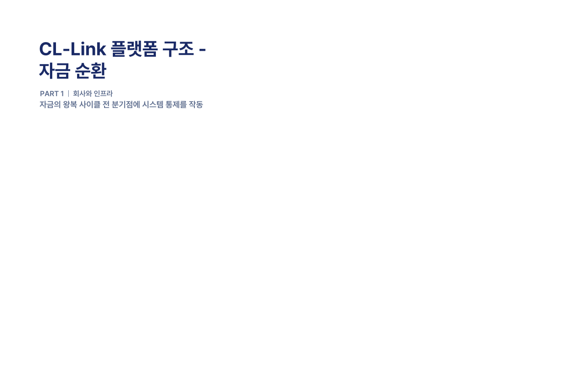
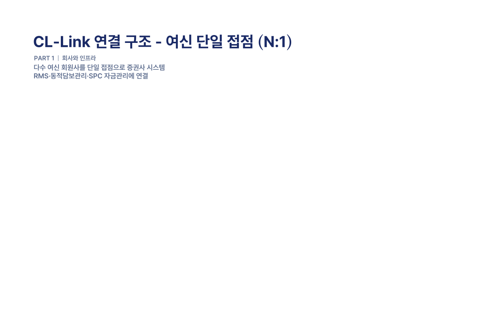

CL-Link 인프라 기반 · 거래 한도 금 일백억원 (₩10,000,000,000) Master Facility & Proportional Drawdown
㈜솔라리스오피둠 · STRICTLY PRIVATE & CONFIDENTIAL
목차
CONTENTS · INVESTMENT MEMORANDUM
담보부 기업운전자금대출(ABL) 투자 설명자료 구성
PART I회사와 인프라
Executive Summary3
CL-Link 인프라의 정의4
CL-Link 플랫폼 구조5
다수 여신 단일 접점 (N:1)6
운영 인력7
PART II거래 구조
자금 구조 — 이원 풀(Two-Pool)8
위험 통제 체계9
회수 우선순위 (Waterfall)10
PART III시스템 시연
시스템 시연 안내11
시연 1. 동적 담보관리 시스템12
시연 2. SPC 담보관리 시스템13
PART IV본 거래의 조건
Term Sheet — 본 거래 개요 및 조건14
PART V마무리
인프라 참여자15
본 인프라의 위치16
APPENDIX부록
면책 및 자료 제공 범위17
㈜솔라리스오피둠 · STRICTLY PRIVATE & CONFIDENTIAL
PART 1CL-Link 인프라
Executive summary
출자에서 회수·분배에 이르는 자금 사이클 전체를 자동화한 인프라
8,000개사
1차 사용자 시장 (금융위 등록 대부업체)
0.24%
5년 누적 부실율 (COVID-19 폭락기 포함)
6~7%
예상 수익률 (연, 협의)
구분
내용
1차 사용자 시장
금융위 등록 대부업체 약 8,000개사
현재 가동 사례
담보부 기업운전자금대출 ABL │ Master Facility 일백억원
인프라 검증 기간
5년 │ 누적 부실율 0.24% (COVID-19 폭락기 포함)
거래 만기
6개월 ~ 12개월 (롤링)
예상 수익률
연 6.0% ~ 7.0% (협의)
㈜솔라리스오피둠은 한국 스탁론 시장의 운영 인프라(CL-Link)를 설계·운영 본 인프라는 대주단 자금이 SPC를 통해 개인 차주에게 도달하고, 원리금이 다시 대주단에게 회수·분배되기까지 전 사이클을 시스템으로 통제
㈜솔라리스오피둠 · STRICTLY PRIVATE & CONFIDENTIAL
PART 1CL-Link 인프라
CL-Link 인프라의 정의
자금의 왕복 사이클 전 분기점에 시스템 통제를 작동
단계
자금 위치
통제 장치
출자
대주단 자금
유안타증권 신탁팀 — SPC 인장·계좌 통제
수령
SPC 자금관리계좌
업무수탁 검증 후 집행
전송
회원사 모계좌
집금 통제 — Daily Sweep 강제
운용
개인 증권계좌
동적 담보관리 — 계좌 평가등급
회수
회원사 모계좌
RMS Daily Sweep — 임의인출 차단
환수
SPC 자금관리계좌
SPC 명의 근질권 + 자동 Sweep
분배
대주단 / 후순위
Waterfall 시스템 — 업무수탁 검증
사이클의 모든 분기점에서 인적 자원의 임의 개입을 시스템 · 계약 · 업무수탁이 차단
㈜솔라리스오피둠 · STRICTLY PRIVATE & CONFIDENTIAL
CL-Link 플랫폼 구조

㈜솔라리스오피둠 · STRICTLY PRIVATE & CONFIDENTIAL
다수 여신 단일 접점 (N:1)

㈜솔라리스오피둠 · STRICTLY PRIVATE & CONFIDENTIAL
PART 1CL-Link 인프라
운영 인력
국내외 금융·시스템 운영 전문가들에 의해 설계 구축
역할
전문성
대표이사 박세훈
미국·국내 금융시장 경력. 한국 핀테크 인프라 사업 설계 및 솔라리스오피둠 창업.
CTO (최고기술책임자)
스탁론·여신 시스템 개발·운영 전문가. 업계 리딩 기업 핵심 인력 출신. RMS 및 신용평가 시스템 자체 설계.
전무 (Front-end / Server)
프론트엔드 개발 및 서버 운영 전문가. CL-Link 플랫폼 웹·서버 아키텍처 설계 책임자. 창립 멤버.
전략부장
종목관리·트레이딩 전문가. 트레이딩 경력 10년 이상. 동적 담보관리의 종목 평가 체계 설계.
핵심 시스템(RMS, 신용평가, 동적 담보관리, SPC 담보관리)은 외주 의존도 없는 자체 개발·운영
㈜솔라리스오피둠 · STRICTLY PRIVATE & CONFIDENTIAL
PART 2거래 구조
자금 구조 — 이원 풀(Two-Pool)
대주단 자금과 회원사 자기자본은 본 인프라 안에서 분리된 두 풀로 운용된다.
구분
자금 위치
규모
자금 출처
회수 순위
Pool B (선순위)
SPC 내부
100억
대주단
최우선
Pool A (후순위)
SPC 외부 담보
10억
회원사 자기자본
후순위
총 담보풀
SPC 근질권
110억
─
LTV 90.9%
회원사 적격 요건
회원사는 본 거래 개시 전 자기자본 10억원으로 적격 스탁론 대출채권을 보유하고, 이를 SPC 명의 근질권으로 사전 설정한다. 사전 형성한 적격 채권은 SPC 외부에 보유되어 1차 손실의 우선 흡수 자본으로 기능하며, 동시에 SPC 근질권으로 설정되어 SPC 대출의 담보를 구성한다. 이로써 본 거래는 개시 시점부터 LTV 90.9%, 무담보 노출 0의 구조로 가동된다.
㈜솔라리스오피둠 · STRICTLY PRIVATE & CONFIDENTIAL
PART 2거래 구조
위험 통제 체계
법적·구조적·기술적 세 층의 통제 장치가 위험을 분담한다.
구분
통제 장치
효과
법적 통제
일반법인 SPC + 유안타증권 업무수탁
SPC 임의 자금집행 차단 │ 인장·계좌 분리 통제 │ 도산 위험 차단 효과
구조적 통제
회원사 자기자본 후순위 담보 (Pool A)
부실 1차 손실의 우선 흡수 │ 회원사 자본의 SPC 외부 락업
기술적 통제
RMS 통합 담보관리 시스템
담보 실시간 감시 │ 자동 청산(반대매매) │ Daily Sweep 강제 집금
법적 통제는 임의 자금집행을, 구조적 통제는 영업 부실 손실의 1차 흡수를, 기술적 통제는 시장 충격기 담보가치 하락 시 자동 회수를 담당한다. 세 층의 동시 실패가 없는 한 대주단 원금 손실 가능성은 통제된다.
㈜솔라리스오피둠 · STRICTLY PRIVATE & CONFIDENTIAL
PART 2거래구조
회수 우선순위 (Waterfall)
SPC 자금관리계좌의 자금 분배는 업무수탁 계약에 따른 순위로 집행
순위
항목
내용
0
조세 및 제비용
SPC 법인세, 업무수탁수수료, 자산관리수수료, 회계·세무·법률자문 등
1
대주단 (선순위)
선순위 대주단 이자 및 원금 (분할상환 또는 만기일시)
2
회원사 잔여분
Pool A 후순위 회수분 (잔존 시 회원사 귀속)
SPC 외부 정산 — 플랫폼 시스템사용료
솔라리스오피둠의 플랫폼 시스템사용료는 본 Waterfall에서 분리되어, SPC 외부에서 회원사가 솔라리스오피둠 앞으로 별도 정산 본 사용료는 SaaS 계약상 회원사가 부담하는 용역 대가로서, 대주단 채권의 회수 우선순위와 무관하게 운용
㈜솔라리스오피둠 · STRICTLY PRIVATE & CONFIDENTIAL
PART 3시스템 시연
시스템 시연 안내
두 시스템은 자금 사이클의 운용 분기와 회수·분배 분기를 각각 담당
시연 1 · 동적 담보관리 시스템
자금 사이클 中 [운용] 분기 담당 · 증권계좌 단위 평가등급 체계 · 종목·집중도·변동성·유동성 종합 평가 · 5년 가동 │ 부실율 0.24% · 본 카테고리 국내 최초
시연 2 · SPC 담보관리 시스템
자금 사이클 中 [회수·분배] 분기 담당 · 풀 단위 LTV 실시간 산출 · Daily Sweep 자동 집행 · 자동 청산 트리거 + Waterfall 분배 자동화 · 본 카테고리 국내 최초
각 시스템 시연 시간 약 10분, 시연 후 질의응답 진행
㈜솔라리스오피둠 · STRICTLY PRIVATE & CONFIDENTIAL
PART 3시스템 시연
시연 1 - 동적관리 시스템
증권계좌 단위 평가등급 체계에 기반한 동적 담보관리는 국내 최초
기존 스탁론은 종목 단위의 정적 LTV로 통제 본 시스템은 차주의 증권계좌 자체를 한 단위로 보고, 종목 구성·집중도·변동성·유동성을 종합한 평가등급을 산출하여 등급별 동적 LTV를 적용
평상시 운용
①
계좌 정보 입력
차주 증권계좌 정보
→
②
종목 등급 표시
보유 종목별 평가
→
③
계좌등급 산출
계좌 단위 종합 등급
시장 충격 발생 — 위기 대응 · 자동 통제
④
반대매매 이벤트
LTV 임계점 도달
→
⑤
하위 종목 매도
시스템 자동 청산
→
⑥
계좌등급 우량화
잔여 종목 등급 상승
위기는 손실의 시작이 아닌, 통제의 시작 — 시장 충격 시 하위 종목 자동 청산으로 잔여 계좌의 등급은 오히려 상승 (5년 가동 트랙 : 부실율 0.24%)
㈜솔라리스오피둠 · STRICTLY PRIVATE & CONFIDENTIAL
PART 3시스템 시연
시연 2 - SPC 담보관리 시스템
개인담보대출 풀의 SPC 차원 실시간 담보관리는 국내 최초
기존 자산유동화는 신탁 wrapping 기반의 정태적 담보 관리로 월 단위 보고에 의존 본 시스템은 SPC가 보유한 수천~수만 건의 개인담보대출 풀을 실시간으로 통제
개별 자산
계좌 1 · 2 · 3 ⋯ N
→
SPC 대출 풀
개인담보대출 통합 · 근질권 110억
→
실시간 통제
풀 단위 일괄 관리
풀 LTV 산출
실시간 가중평균.
자동 청산 트리거
임계점 도달 시 자동 집행.
Daily Sweep
일별 강제 집금.
Waterfall 분배
대주단 선순위 → 회원사 후순위 잔여.
5년 가동 트랙 : 자동 청산 누적 집행, 회수 성공률 검증 · IP 귀속 ㈜솔라리스오피둠